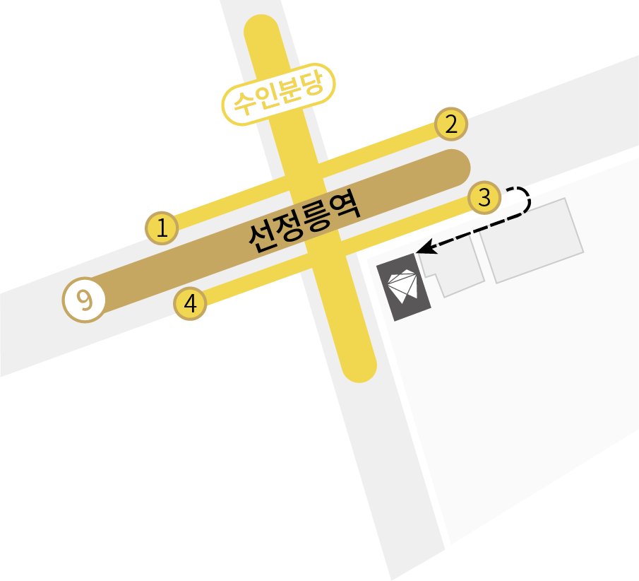

대학병원 보철과 교수 출신 대표원장이 직접 모든 진료를 책임집니다 98.3% 수술 성공률 100,000건이 넘는 풍부한 임상경험 AIDEN 강하고, 단단하게. 편안하고 오래가는 치료를 고집합니다
보건복지부 인정 치과보철과 전문의 대한치과보철학회 치과보철과 인정의 前) 순천향대병원 치과보철과 조교수 現) 순천향대병원 외래교수 치의학 석사 학위 취득 국군일동병원 치과보철과장 6사단의무대 치과반장 대한치과보철학회 정회원 대한구강악안면임플란트학회 정회원 대한심미치과학회 정회원 턱관절장애교육연구회 교육 수료 Academy of Osseointegration(미국골유착학회) poster prensentation International College of Prothodontists(국제보철학회) poster presentation Advanced T-scan Occlusal Adjustment Course 오스템 임플란트 마스터 코스 연자 및 자문위원 덴티움 Clinical Research Center
진료과목 소개 강남에이든치과는 정확한 진단으로 철저한 치료계획 수립을 원칙으로 합니다 최소절개, 최소통증, 빠른 회복 임플란트 풍부한 임상경험을 바탕으로 빠르고 정확하게 수술합니다 보철치료 틀니는 보철과 전문의에게 대학 교수 보철과 전문의의 전문분야 틀니풍부한 임상경험으로 보다 편하게 제작해드립니다 건강하게 자신감 있는 웃음, 라미네이트 먼 훗날까지 생각하여 안전하고 건강하게 시술합니다 시리지 않는 건강한 치아/잇몸 미백 이 손상 없이 치아의 자신감을 되찾아드립니다 보험적용으로 걱정없는 턱관절치료 턱관절 통증과 치료비 부담을 덜어드립니다
강남에이든치과는 환자를 최우선으로 생각합니다 강남에이든치과는 환자를 최우선으로 생각합니다 01 프라이빗한 개별 진료실 모든 진료실을 개별 진료실로 구성하여 교차감염을 막았습니다. 환자에게 온전히 집중하는 프라이빗하고 안전한 진료를 약속드립니다. 진료실 내 짐 보관소에 짐을 보관하시고 분실 걱정 없이 진료 받으세요. 02 틈 없이 완벽한 소독 한 환자만을 위해 멸균, 소독하여 준비한 1인 1기구만을 사용합니다. 진료가 끝나기 전후로 진료실 기구를 모두 소독합니다.
퇴근하고 오셔도 괜찮아요 매주 화/목 밤 8시 반까지 오시는길 서울 강남구 선릉로 578태정 빌딩 3F 선정릉역 3번 출구 뒤돌아 도보 1분 02-539-2112 진료시간 월, 수, 금 오전 9 : 30 - 오후 6 : 30 화, 목 오전 9 : 30 - 오후 8 : 30 토 요 일 오전 9 : 30 - 오후 1 : 30 점심시간 오후 1 : 00 - 오후 2 : 00 